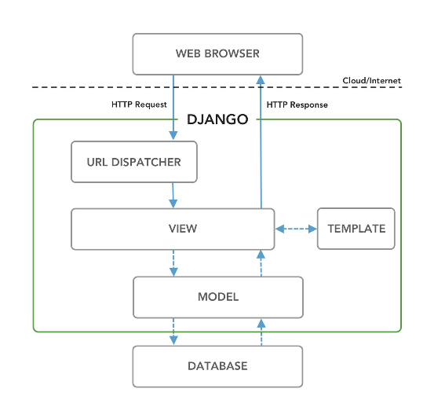
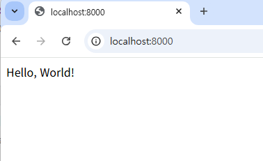

Hello World 웹사이트
이 장에서는 웹사이트와 웹 프레임워크가 어떻게 작동하는지 검토하고, Django 의 아키텍처를 살펴본 후 “Hello World” 를 표시하는 간단한 Django 웹사이트를 구축해 볼 것이다.
인터넷 작동 방식
https://learndjango.com 웹사이트에 접속할 때 발생하는 과정을 여섯 단계로 간략하게 정리하면 다음과 같다.
- 브라우저에 도메인 이름을 입력한다.
- 브라우저는 DNS 를 통해 도메인 이름에 해당하는 IP 주소를 조회한다.
- 브라우저는 해당 IP 주소의 웹 서버와 네트워크 연결을 설정한다.
- 브라우저는 원하는 리소스에 대한 HTTP 요청을 보낸다.
- 웹사이트는 요청을 처리한 후 HTTP 응답을 반환한다.
- 브라우저는 응답 내용을 기반으로 웹페이지를 랜더링한다.
웹 프레임워크 작동 방식
웹사이틑 기본적으로 정적static과 동적dynamic 두 가지 유형으로 나뉜다. 정적 웹사이트는 개별 HTML 문서로 구성되며, 예를 들어 10페이지로 구성된 웹사이트라면 10개의 HTML 문서가 필요하다. 이 방식은 매우 작은 규모의 사이트에만 적합하다. 반면에 대부분의 웹사이트는 데이터메이스, HTML 템플릿, 그리고 브라우저로 전송되기 전에 파일을 생성할 수 있는 애플리케이션 서버로 구성된 동적 웹사이트다. 동적 웹사이트에서는 상대적으로 적은 코드로 수백, 때로는 수천 개의 웹 페이지를 생성할 수 있다. Django 와 같은 웹 프레임워크는 이러한 동적 웹사이트를 위해 설계되었다.
웹 프레임워크인 Django 의 핵심 역할은 다음 세 가지이다.
- 웹페이지를 랜더링하기 위해 URL 을 뷰 로직에 매핑한다.
- 데이터베이스와 상호작용하기 위한 추상화 계층을 제공한다.
- 템플릿 시스템을 통해 HTML 과 유사한 코드를 출력한다.
Django 아키텍처
Django 에서 고려해야 할 네 가지 주요 구성 요소는 URL, View, Model, Template 이다.

시각적으로 Django 의 요청/응답 주기는 위 다이어그램과 같으며, 실선은 필수 상호 작용을, 점선은 선택적 상호작용을 나타낸다.
- 웹 브라우저에서 HTTP 요청 가 들어오면, 가장 먼저 Django 의 URL Displaycher(urls.py) 가 동작하여 설정된 URL 패턴을 검색한 뒤 처음으로 일치하는 **View(view.py)** 에 요청을 전달한다.
- 해당 View 는 요청된 데이터와 스타일을 조합해 HTTP 응답을 생성한 뒤 웹 브라우저로 반환한다. 사실 이 두가지만으로도 Django 웹사이트를 구성할 수 있다. (URL Dispatcher 와 View 만 사용)
그러나 실제로는 Model 과 Template 이 추가되는 경우가 더 흔하다.
- 데이터베이스를 사용하는 웹사이트에서는 View 가 Model(models.py) 과 상호작용한다. Model 은 데이터베이스 테이블과 동작 방식을 정의하며, 데이터베이스 쿼리를 지원한다.
- 이 데이터를 다시 View 로 전달하면, 보통 Template(HTML, XML, JSON 등 텍스트 기반 파일 형식) 을 통해 화면에 랜더링할 수 있는 형태로 변환한다.
- 최종적으로 View 가 필요한 정보를 모두 확보하면, 웹 브라우저에 HTTP 응답을 반환한다.
Model-View-Controller vs Model-View-Template
MVC 패턴(Model-View-Controller) 은 애플리케이션의 데이터와 로직, 그리고 표시 영역을 분리해 개발자가 보다 쉽게 구조를 이해할 수 있도록 도와준다. 전통적인 MVC 패턴은 세 가지 주요 구성 요소가 있다.
- **Model:** 데이터와 핵심 비즈니스 로직을 관리
- **View:** 모델의 데이터를 특정 형식으로 랜더링
- **Controller:** 사용자 입력을 받아 애플리케이션에 맞는 로직을 수행
Django 의 접근 방식은 종종 MVT(Model-View-Template) 라고 불리지만, 실제로는 URL 설정을 포함한 4가지 요소, 즉 **MVTU(Model-View-Template-URL)** 패턴에 더 가깝다.
- Model: 데이터와 핵심 비즈니스 로직을 관리
- View: 사용자에게 어떤 데이터를 보낼지 결정하되, 그 표현 방식은 정의하지 않음
- Template: HTML(필요에 따라 CSS, JavaScript, 정적 자산static assets 포함) 을 사용해 데이터를 표시
- URL Configuration: 정규 표현식을 사용해 URL 을 뷰에 연결
전통적인 MVC 패턴과 장고의 MVT 패턴를 비교하면 다음과 같이 이야기할 수 있다.
- MVC 에서의 View 는 Django 의 Template 과 유사하다.
- MVC 에서의 Controller 는 Django 의 View 와 URL Dispatcher 로 나누어져 있다.
Django 의 기본 파일 구성
이번 장에서는 가능한 한 간단하게 “Hello, World” 웹 사이트를 만들어 본다. 일반적으로 Django 웹사이트에는 URL Dispatcher, View, Model, Template 모두 사용되지만, 사실 URL Dispatcher 와 View 만으로도 동작이 가능하다. 이번 예시에서는 URL Dispatcher 와 View 만 사용한다.
장고 시작하기 에서 만든 가상 환경에서 실습한다.
> tree /f /a
| manage.py
|
\---django_project
asgi.py
settings.py
urls.py
wsgi.py
__init__.py
- init.py: 해당 폴더의 파일들이 파이썬 패키지의 일부임을 알리는 파일이다. 이 파일이 없으면 Django 에서 종종 필요한 디렉토리 간 파일 임포트가 불가능하다.
- asgi.py: 선택적으로 사용할 수 있는 ASGI(Asynchronous Server Gateway Interface) 애플리케이션을 설정한다.
- settings.py: Django 프로젝트 전반의 설정을 담당한다.
- urls.py: 브라우저나 URL 요청에 대해 어떤 페이지를 구성할지 Django 에 알려준다.
- wsgi.py: Django 의 기본 설정인 WSGI(Web Server Gateway Interface) 애플리케이션을 설정한다.
manage.py 파일은 django_project 디렉토리의 일부가 아니며, 로컬 웹 서버 실행이나 새 앱 생성 등 다양한 Django 관리 명령어를 실행할 때 사용된다.
마이그레이션
> python manage.py runserver
Watching for file changes with StatReloader
Performing system checks...
System check identified no issues (0 silenced).
You have 18 unapplied migration(s). Your project may not work properly until you apply the migrations for app(s): admin, auth, contenttypes, sessions.
Run 'python manage.py migrate' to apply them.
March 02, 2025 - 01:11:25
Django version 5.0.12, using settings 'django_project.settings'
Starting development server at http://127.0.0.1:8000/
Quit the server with CTRL-BREAK.
Django 서버를 시작하면 You have 18 unapplied migration(s) 문구에 보이는데, 이번에 그것이 무엇인지 살펴보자.
마이그레이션은 Django 가 데이터베이스 변경 사항을 추적하기 위해 자동으로 생성하는 특별한 스크립트이다. 시간이 지남에 따라 프로젝트가 커지면, 데이터베이스와 모든 테이블의 구조를 정의하는 Django 데이터베이스 모델에 여러 변경이 생기기 마련이다. Django 의 마이그레이션 프레임워크를 사용하면, 이러한 변경 사항을 시간순으로 추적하여 특정 마이그레이션 파일에 정의된 구성과 동일하도록 데이터베이스를 수정할 수 있다.
startproject 명령어로 새 프로젝트를 시작하면, Django 에는 admin, auth, contenttypes, sessions 등의 여러 내장 앱이 포함된다. 이 앱들은 데이터베이스에 변경 사항을 적용한다. 로컬 데이터베이스에 해당 변경 사항을 반영하기 위해서는 migrate 관리 명령어를 사용하면 된다. 로컬 서버를 중지하고 migrate 명령을 사용해 보자.
> python manage.py migrate
Operations to perform:
Apply all migrations: admin, auth, contenttypes, sessions
Running migrations:
Applying contenttypes.0001_initial... OK
Applying auth.0001_initial... OK
Applying admin.0001_initial... OK
Applying admin.0002_logentry_remove_auto_add... OK
Applying admin.0003_logentry_add_action_flag_choices... OK
...
Applying auth.0012_alter_user_first_name_max_length... OK
Applying sessions.0001_initial... OK
migrate 명령어는 사용 가능한 모든 마이그레이션을 적용하며, admin, auth, contenttypes, sessions 등의 앱에 관한 마이그레이션을 나열한다. 예를 들어, Applying contenttypes.0001_initial... OK 는 contenttypes 앱의 0001_initial 마이그레이션 스크립트가 성공적으로 실행되었음을 의미한다. 이제 로컬 서버를 다시 실행해보면 더 이상 경고가 나타나지 않는다.
> python manage.py runserver
Watching for file changes with StatReloader
Performing system checks...
System check identified no issues (0 silenced).
March 02, 2025 - 01:20:47
Django version 5.0.12, using settings 'django_project.settings'
Starting development server at http://127.0.0.1:8000/
Quit the server with CTRL-BREAK.
앱App 생성하기
하나의 Django 프로젝트는 여러 개의 앱을 포함할 수 있다. 이는 코드를 깔끔하고 읽기 쉽게 유지하기 위한 조직적 기법이다. 각 앱은 특정 기능을 담당하도록 분리되어야 한다. django_project/settings.py 파일을 살펴보면, Django 가 기본으로 제공하는 여섯 개의 내장 앱이 이미 설정되어 있다. 이들은 모두 django.contrib 디렉토리에 위치하며 admin, auth, contenttypes, sessions, messages, staticfiles 기능을 제어한다.
django_project/settings.py
INSTALLED_APPS = [
'django.contrib.admin',
'django.contrib.auth',
'django.contrib.contenttypes',
'django.contrib.sessions',
'django.contrib.messages',
'django.contrib.staticfiles',
]
사실 원하는 경우 모든 코드를 단일 파일에 작성해도 문제는 없지만, 앱으로 기능을 분리해두면 Django 프로젝트의 구조를 더욱 명확히 이해하고 유지보수하기 쉬워진다. 예를 들어, 전자상거래(e-commerce) 웹사이트라면, 사용자 인증을 위한 앱, 결제 기능을 위한 앱, 상품 상세 정보를 제공하는 앱 등을 각각 따로 두는 식이다. 앱으로 기능을 분리하는 시점은 주관적이지만, 한 앱에 너무 많은 기능이 몰려 있다고 느껴지면 나누는 것이 좋다.
새로운 앱을 만들기 위해 우선 현재 실행 중인 서버를 종료한다. 그리고 startapp 명령어 뒤에 만들고자 하는 앱 이름을 입력한다. 예시에서는 pages 라는 이름을 사용한다. Django 에서는 관례상 앱 이름을 복수형(예: pages, payments 등)으로 쓰는 것이 좋다. 단, blog 처럼 복수형이 어색한 경우는 예외이다.
> python manage.py startapp pages
이 명령을 실행하면 django_project 디렉토리 안에 새로운 pages 디렉토리가 생성되고, 아래와 같은 파일들이 포함된다.
\---pages
| admin.py
| apps.py
| models.py
| tests.py
| views.py
| __init__.py
|
\---migrations
__init__.py
각 파일은 다음과 같은 역할을 한다.
- admin.py: Django 의 내장 Admin 앱 설정을 위한 파일
- apps.py: 해당 앱 자체에 대한 설정 파일
- models.py: 데이터베이스 모델을 정의하는 파일. Django 가 이를 자동으로 데이터베이스 테이블로 변환
- migrations/:
models.py파일 변경 사항을 추적해 데이터베이스와 동기화하기 위한 마이그레이션 스크립트를 저장 - test.py: 앱별 테스트 코드를 작성하는 파일
- views.py: 웹 앱의 요청/응답 로직을 처리하는 파일
새로운 앱이 생성되었지만 Django 가 이를 인식하도록 django_project/settings.py 파일의 INSTALLED_APPS 목록에 앱 이름을 명시해줘야 한다. 에디터에서 django_project/settings.py 파일을 열고, 기존의 여섯 개 내장 앱 아래에 pages 를 추가하자.
django_project/settings.py
INSTALLED_APPS = [
'django.contrib.admin',
'django.contrib.auth',
'django.contrib.contenttypes',
'django.contrib.sessions',
'django.contrib.messages',
'django.contrib.staticfiles',
'pages', # new
]
첫 번째 View 만들기
이번에는 “Hello, World!” 라는 텍스트를 출력하는 정적 페이지를 만들어본다. 이 페이지는 데이터페이스나 템플릿 파일을 사용하지 않으며, Django 의 View 와 URL 이 어떻게 동작하는지 간단하게 소개한다.
View 는 웹 요청을 받아 웹 응답을 반환하는 파이썬 함수이다. 응답은 웹 페이지의 HTML 내용, 리다이렉트, 404 에러, 이미지 등 거의 모든 형태가 될 수 있다. 웹 페이지가 요청되면 Django 는 자동으로 요청에 대한 메타데이터를 담은 HttpRequest 객체를 생성한다. 이후 Django 는 적절한 View 를 로드하여 이 HttpRequest 객체를 첫 번째 매개변수로 전달한다. View 는 최종적으로 HttpResponse 객체를 반환하는 역할을 한다.
pages 앱 안에 있는 views.py 파일의 초기 내용은 아래와 같다.
pages/views.py
from django.shortcuts import render
# Create your views here.
render 를 다루는 것은 다음 장에서 하고, 지금은 pages/views.py 파일을 아래와 같이 업데이트 한다.
pages/views.py
from django.http import HttpResponse
def home_page_view(request):
return HttpResponse("Hello, World!")
from django.http import HttpResponse: django.http 모듈에서 HttpResponse 클래스를 가져온다.def home_page_view(request):: home_page_view 라는 함수를 정의한다.- 함수의 첫 번째 매개변수는 HttpRequest 객체로 관례상 request 라는 이름을 사용한다. (이름은 달라도 순서가 맞으면 작동함)
- 이 view 는 “Hello, World!” 라는 텍스트가 담긴 HttpResponse 객체를 반환한다.
모든 view 는 이와 같이 작성된다. 먼저 view 의 이름을 정의하고, HttpRequest (여기서는 request) 객체를 받으며, 최종적으로 HttpResponse 객체를 반환한다. 추가 로직이나 매개변수를 넣을 수 있지만, 기본 패턴은 동일하다.
URL Dispatcher
View 를 준비했으니 이제 관련 URL 을 구성할 차례이다. pages/urls.py 파일을 새로 생성하고 아래의 코드로 업데이트 하자.
pages/urls.py
from django.urls import path
from .views import home_page_view
urlpatterns = [
path("", home_page_view)
]
from django.urls import path: Django 의 path 를 가져와 URL 패턴을 설정한다.
이 URL 패턴은 두 부분으로 이루어진다.
- 경로(
route): 여기서는 빈 문자열""로 정의 - 뷰 참조(
view):home_page_view
즉, 사용자가 빈 문자열로 표현되는 홈페이지를 요청하면, Django 는 home_page_view View 를 실행하게 된다.
다음 단계는 프로젝의 진입점인 django_project/urls.py 파일을 업데이트 하는 것이다. 이 파일은 각 앱에 속하지 않는 다른 URL 패턴들의 관문 역할을 한다. (이 아키텍처 패턴은 앞으로 복잡한 웹 애플리케이션을 만들면서 점점 더 중요해진다.)
Django 는 내장 관리자(admin)을 위한 경로를 자동으로 설정한다. 추가 URL 경로를 포함시키기 위해, django.urls 모듈에서 include 함수를 가져온 후, 다시 빈 문자열 "" 을 사용하여 pages 앱에 포함된 모든 URL 을 불러온다. 자세한 내부 작동 방식은 Django 공식 문서를 참고하자.
업데이트된 코드는 다음과 같다.
from django.contrib import admin
from django.urls import path, include
urlpatterns = [
path('admin/', admin.site.urls),
path("", include("pages.urls"))
]
이제 사용자가 빈 문자열로 표현되는 홈페이지를 방문하면 Django 는 pages 앱 내에서 일치하는 URL 경로를 찾는다.
서버가 정상 작동하는지 확인하기 위해 Django 서버를 시작하자.

웹브라우저에서 http://localhost:8000 또는 http://127.0.0.1:8000 접속했을 때 위 스크린샷과 같이 뜨면 정상적으로 동작한 것이다.